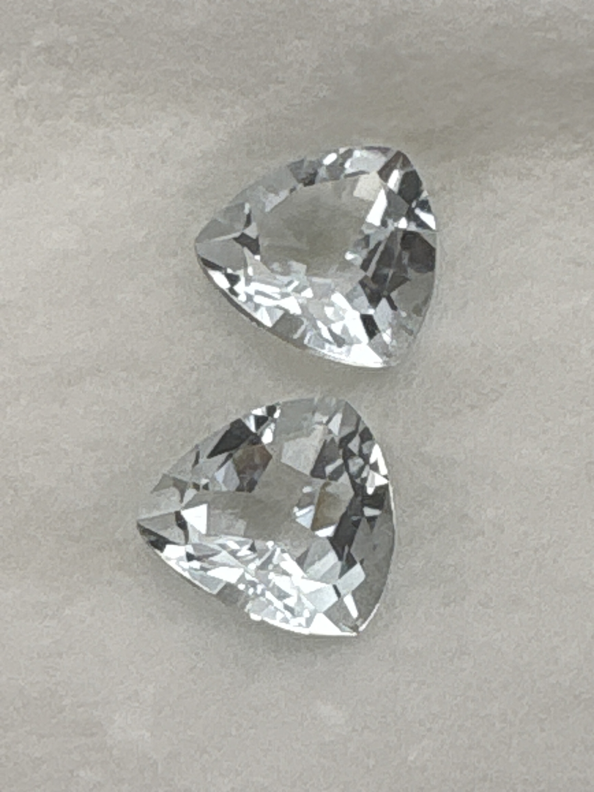

The Gem Drawer › No. 87

Two trillion cuts labeled aquamarine that photograph essentially colorless.
| Catalogue no. | #87 |
|---|---|
| As labeled | Aquamarine - PAIR, 2 stones in this box, see notes |
| Shape / cut | Trillion (both stones) |
| Weight | 1.55 (combined, presumed) |
| Measurements | Not recorded |
| Colour | Colorless/near-colorless as photographed (unusually pale for aquamarine - see notes) |
| Clarity / condition | Not recorded |